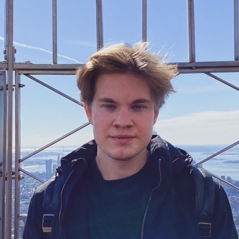

About Me

I am a PhD Student in Computer Science at the University of Stuttgart, Germany, advised by Prof.
Andreas Bulling.
My research focuses on computational theory of mind, with a specific emphasis on deep learning
approaches.
The ultimate goal is improving human-AI collaboration.
I hold a BSc and a MSc degree in Physics. During my studies I focused on theoretical physics, in
particular theoretical ecology and neuroscience.
News
[10.07.2024] üèÖ I have been selected as volunteer for ACL 2024
[04.07.2024] üî• Paper accepted at ECAI 2024 (Santiago de Compostela, Spain)
[24.06.2024] üî• Paper accepted at ICML 2024 Workshop on
Mechanistic
Interpretability (Vienna, Austria)
[16.05.2024] üî• Paper accepted at ACL 2024 (Bangkok, Thailand)
[01.05.2024] ☀️ I got accepted at the CoGenAI Summer
School
(Aalto University, Finland)
[25.03.2024] üë®ü躂Äçüè´ Constantin Ruhdorfer, Anna Penzkofer and I are organising a new course titled
“Computational Theory of Mind and Cognition”
[01.03.2024] üèÜ My student Constantin Ruhdorfer's master's thesis was awarded the Rul Gunzenh√§user
Award
[18.12.2023] üèÖ I have been selected as volunteer
for AAAI
2024
[09.12.2023] üî• Paper accepted at AAAI 2024 (Vancouver, Canada)
[29.09.2023] üìë Reviewing for CHI 2024
[07.04.2023] üî• Paper accepted at CogSci 2023 (Sydney, Australia)
[27.03.2023] üî• Paper accepted at INTERACT 2023 (York, UK)